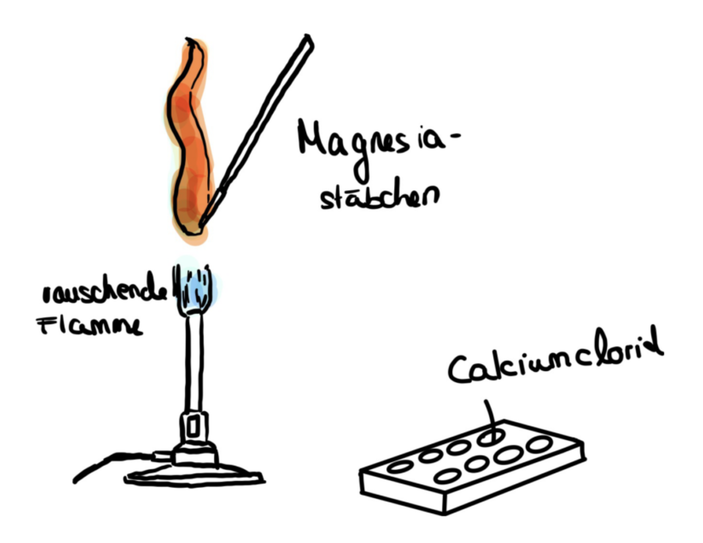

Die Zielstellung des Experiments „Flammenfärbung" lautet: Die vom Bunsenbrenner erzeugte rauschende Flamme zu färben. Dabei ist die entstehende Farbe von den in die Flamme gehaltenen Ionen abhängig. Die Flammenfärbung kann daher auch als Nachweis bestimmter Metalle und Halbmetalle in Salzen dienen.
Experiment: Flammenfärbung von Calcium
Zielsetzung
Theoretische Grundlagen
Bei Wärmezufuhr geben die Elemente und deren Ionen Licht in bestimmten Wellenlängen ab Die unterschiedlichen Farben dieses Lichtes hängen von der Wellenlänge ab.
Das menschliche Auge kann außerdem lediglich im Bereich von 400nm und 780nm Licht und dessen Farbe erkennen. Somit gibt es bestimmte Elemente und Ionen, bei denen die Flammenfärbung sinnlos ist, da wir die Veränderung der Flammenfarbe nicht wahrnehmen würden.
Bei anderen Elementen und Ionen ist der Versuch ebenfalls nicht sinnvoll, da die rauschende Bunsenbrennerflamme nicht eine genügend hohe Temperatur erreicht, um eine Lichtabgabe zu erzeugen. Die Lichtabgabe aller Elemente und Ionen entsteht durch die Energieumwandlung von der durch die Flamme erzeugten Wärmeenergie in die durch Licht abgegebene Strahlungsenergie.
Auf Teilchenebene werden die Außenelektronen eines Atoms durch die zugeführte Wärmeenergie in eine höhere bzw. weiter außen liegende Schale versetzt. Die Valenzelektronen nehmen somit einen Zustand höherer Energie ein. Das Atom befindet sich in einem instabilen Zustand namens „angeregter Zustand". Aus diesem Grund bewegen sich die Elektronen zurück und nehmen wieder einen Zustand niedriger Energie an.
Da Energie nie verloren geht, sondern nur umgewandelt werden kann, geben die Elektronen die freigewordene Energie in Form von Strahlungsenergie ab. Die Energiedifferenz bestimmt die Wellenlänge und damit die Farbe des ausgesendeten Lichts.
Materialien
- Magnesiastäbchen
- Bunsenbrenner
- Schale
Chemikalien
- Calciumchlorid
- Salzsäure (zum Lösen)

Calciumchlorid ist reizend
Schutzbrille tragen. Lange Haare zusammenbinden. Schutzkleidung empfohlen.
Durchführung
- Probe (Magnesiastäbchen) mit Salzsäure reinigen
- Calciumchlorid mörsern
- Luftzufuhr des Bunsenbrenners vollständig öffnen => rauschende Flamme
- Spatelspitze Calciumchlorid auf Magnesiastäbchen in die Flamme des Bunsenbrenners halten (rauschende Flamme)
- Färbung betrachten

CC BY-SA 4.0" data-source="Eigenes Bild" data-author="Amelia D." data-title="Versuchsaufbau Flammenfärbung">Beobachtung
Die Flamme färbt sich orangerot, was der Farbe von Calcium-Ionen entspricht. Somit haben wir diese nachgewiesen und die Flamme erfolgreich gefärbt.

Auswertung
Zwar war die Färbung entsprechend des durch die Wellenlänge von Calcium-Ionen erzeugtem Lichts orangerot, allerdings war diese nicht allzu deutlich zu erkennen. Der Grund hierfür war, dass man den richtigen Punkt der Flamme mit dem Magnesiastäbchen treffen muss, um eine deutliche und „pigmentierte“ Färbung zu erzeugen. Dies ist schwierig innerhalb kurzer Zeit zu schaffen, wodurch sobald der richtige Punkt erkannt wurde, die Färbung nicht mehr so ausgeprägt ist (zu viel Zeit war vergangen, wodurch ein großer Teil des Calciumchlorids schon „abgebrannt" war).